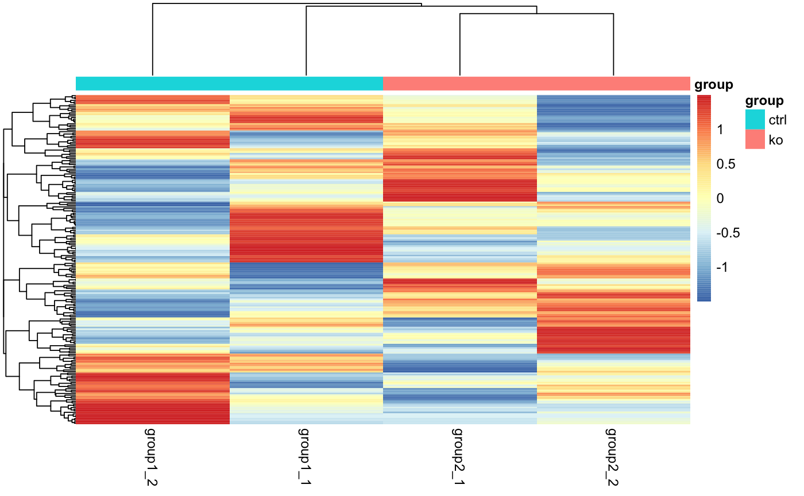
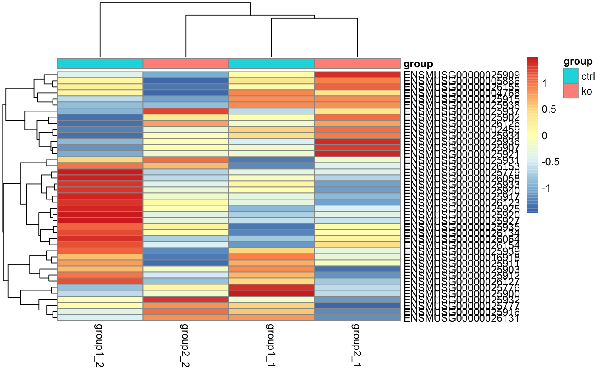
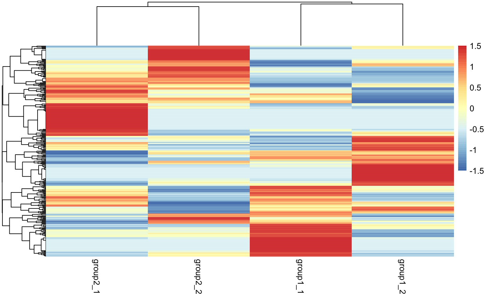
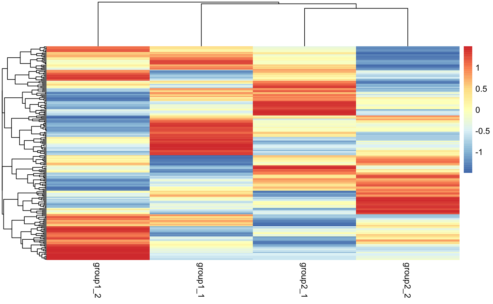

These functions facilitate heatmap plotting of a specified set of genes. By
default, row- and column-wise hierarchical clustering is performed using the
Ward method, but this behavior can be overrided by setting cluster_rows or
cluster_cols to FALSE. When column clustering is disabled, the columns
are sorted by the interesting groups (interesting_groups) specified in the
bcbioRNADataSet and then the sample names.
plot_gene_heatmap(object, ...) .plot_gene_heatmap(counts, genes = NULL, cluster_rows = TRUE, cluster_cols = TRUE, scale = "row", annotation = NULL, ...) # S4 method for bcbioRNADataSet plot_gene_heatmap(object, ..., symbol = FALSE) # S4 method for DESeqDataSet plot_gene_heatmap(object, ...) # S4 method for DESeqTransform plot_gene_heatmap(object, ...)
| object | Object. |
|---|---|
| ... | Additional arguments, passed to |
| counts | Counts matrix. |
| genes | Character vector of specific gene identifiers to plot. |
| cluster_rows | Use hierarchical clustering to arrange rows. |
| cluster_cols | Use hierarchical clustering to arrange columns. |
| scale | Character indicating if the values should be centered and scaled
in either the |
| annotation | Optional. Alternative annotation to use. Useful when plotting more than one column. |
| symbol | Match against Ensembl gene symbols. |
Graphical output only.
Other Heatmaps: plot_correlation_heatmap,
plot_deg_heatmap
plot_gene_heatmap(bcb, genes, symbol = FALSE)# DESeqDataSet dds <- DESeqDataSetFromTximport( txi = txi(bcb), colData = colData(bcb), design = formula(~group)) %>% DESeq#>#>#>#>#>#>#>plot_gene_heatmap(dds)